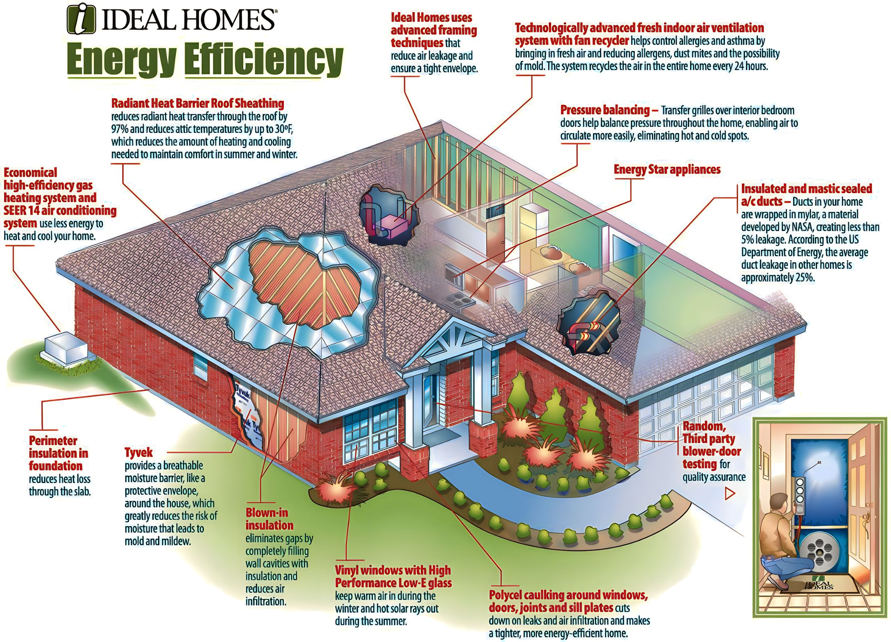

If the end of the world would depend on you, would you save it? This is a tough question, yet we hold this responsibility
every second of every day. We live in a world that needs our help to keep surviving, but are we doing enough?
Here I will share with you some of the best ways in how to live sustainability and adopt a more
sustainable lifestyle that will make a difference in the world that we all share.
What Living A Sustainable Lifestyle Means
Living a sustainable lifestyle is adopting a new way of living. It's to live in a way that would meet all the natural human needs to be
alive, which are basically food, water, and shelter. But without any extra luxury and resources that bring no value for our surviving
and can potentially harm the planet.
The main reason to adopt a sustainable lifestyle and deprive ourselves of things that we don't need is mainly to attempt to
reduce the negative impact that we continually have on this planet.
That way, we stand a chance to ensure that future generations will have not only a place to call home but will have the essential
resources that they need to survive.
So if you think about it, choosing to live a more sustainable life is just like an excellent investment for future generations to come.
to give them a chance to live in this world and experience the amazing things that our planet can offer.
By reducing our carbon footprint, our energy consumptions, fashion choices, and our diets, we can make a difference that will
change the lives of future generations to come.
We are all here due to the man heroic actions that generations before us took upon them to ensure that we could have a
future, so isn't it our obligation to ensure that the next ones will have a standing chance as well?

The Importance of Sustainable Living
The answer is quite simple andstraightforward we need our planet to keep being able to resource us with the basic things
that we need to survive. It's about survival but it's also about stopping catastrophic disasters from happening.
Natural disasters are not just accidental damage from mother nature. We are the cause for many of the climate change
challenges that we have been experiencing, things like floods, earthquakes, hurricanes, even the abnormal snowing in the Sahara desert.
Our impact has consequences on the planet, and many of those will affect us directly. Mainly due to
the things that we use every day.
Things like the enormous and misplaced amount of garbage disposal, the high demand for fossil fuel (that provide us with
electricity). Excessive carbon print and wrongly disposal of toxic chemicals into the sea, are just some of the human-made acts
against the environment. Little but incredible impactful actions can lead to :
• Health problems, which have been more and more common.
• Climate change, for example, the rising levels of the water.
• Lack of resources from mother nature, without water and food, we can't survive.
Little and almost seamless acts such as dropping a little straw on the ground can have terrible consequences that will affect
every person, animal, and the environment. So if you could make a difference today, would you?
There are so many little actions that will have a tremendous impact on saving the world and you can do them so easily and
without much effort Small action that will help you to be more grateful for the world that we all share.
Living a sustainable lifestyle might seem simple, but it represents a tremendous feeling of joy in
knowing that you are one of the reasons why future generations will have a chance.
1.The smog Free Tower.
Daan Roosegaarde is the mastermind behind the world's first smog vacuum cleaner. The Smog Free Tower measures almost 23 feet high (7 meters) and sucks in polluted air, cleaning it through a process of ionization before releasing it again.
At its peak performance, the tower cleans 30,000 m3 of air per hour. Thanks to Roosegaarde's design, you can even wear rings made from the compressed smog particles collected from the tower. By buying and wearing a Smog Free Ring, you're contributing to over 10,700 square
feet (1000 square meters) of clean air. The project has garnered a lot of attention since its inception, winning multiple awards. Recent tower campaigns have been launched in South Korea,China,Poland,etc.
2. Zephyr solar.
Zéphyr is a photovoltaic balloon and eco-friendly generator created by Karen Assaraf, Julie Dautel, and Cédric Tomissi, and their France-based start-up EONEF.
The autonomous aerial platform takes the form of a helium balloon. Operating individually or as an aerial observation network, the solar-powered balloons can be deployed in under an hour, can
fly to 30 days at a time, are capable of withstanding winds of 43 mph (70 kph), and can fly at great altitudes.
The EONEF balloons can be used for a wide range of sustainability initiatives. They are being incorporated in scientific missions like observing wildlife, measuring air quality, and can be used
to promote coordination during a disaster. It is easily one of our favorite sustainable innovation projects.
3. The Green Building Initiative (GBI).
The Green Building Initiative (GBI) is an international effort towards creating sustainable, resource-efficient buildings. They offer a certification program for commercial
buildings that adhere to their environmentally-friendly vision. Their goal is to establish a standard of best practices for green buildings globally, as well as providing third-party assessment tools
for sustainability requirements.
Green building practices include:
Energy-efficient design: Incorporating features such as high-performance insulation, efficient heating and cooling systems, and renewable energy sources like solar and wind power.
Water conservation: Implementing water-efficient fixtures, irrigation systems, and landscaping that requires less water.
Sustainable materials: Using environmentally friendly and non-toxic materials, such as recycled and locally sourced materials, for construction.
Indoor air quality: Providing proper ventilation and using low-VOC (volatile organic compound) products to improve indoor air quality.
Waste reduction: Recycling and reducing construction waste, and promoting the use of recyclable materials in the building's operation.
4. Air carbon:A sustainable plastic for future.
Air Carbon is a sustainable material that is created by capturing and transforming carbon emissions from the atmosphere into a polymer.
This innovative technology was developed by Newlight Technologies, and it is considered a carbon-negative material since it removes more carbon dioxide from the
atmosphere than it emits during its production process.
AirCarbon has a variety of applications and can be used to produce products such as furniture, packaging, and electronics. It is a versatile material that has properties
similar to traditional plastics, but it is much more environmentally friendly.
One of the main benefits of AirCarbon is that it is created from renewable resources, specifically carbon emissions that would otherwise contribute to climate change.
Additionally, the production process requires less energy and emits fewer greenhouse gases than traditional plastics, making it a more sustainable alternative.
Overall, AirCarbon is a promising material that has the potential to significantly reduce carbon emissions and address the environmental challenges associated with traditional plastics.
5. Solar Glass
Solar glass, also known as photovoltaic glass, is a type of glass that is designed to generate electricity from sunlight. It is made by coating standard glass with a thin layer of photovoltaic material, usually silicon, that can convert sunlight into electrical energy.
Solar glass can be used in a variety of applications, such as windows, skylights, and building facades. When installed in a building, it can help to reduce energy consumption by generating electricity to power lighting, heating, and cooling systems. It can also help to reduce the carbon footprint of a building by reducing the amount of electricity needed from non-renewable sources.
There are several types of solar glass available, including transparent solar glass, which allows light to pass through while generating electricity, and semi-transparent solar glass, which can provide some shading while generating electricity.
Overall, solar glass is an innovative technology that can help to make buildings more sustainable and energy-efficient.
6.S.Cafe: Fabric created with recycled from coffee grounds.
S.Café® is a sustainable fabric created from recycled coffee grounds that offers a range of benefits for both the environment and the wearer. This innovative material is made by collecting used coffee grounds from coffee shops, which are then processed and transformed into yarns that can be woven into fabrics.
One of the key benefits of S.Café® fabric is its sustainability. By repurposing coffee grounds that would otherwise end up in landfill, this fabric helps to reduce waste and promote a circular economy. Additionally, the production process requires less water and energy compared to traditional fabric production methods, making it a more environmentally friendly choice.
S.Café® fabric also offers several functional benefits. Due to the natural properties of coffee, such as its odor-absorbing and moisture-wicking properties, S.Café® fabric is naturally odor-resistant and quick-drying. This makes it a great choice for activewear and outdoor clothing, as well as for everyday use.
7.The veganbottle: An all natural alternative to plastic bottles.
Created by LYSPACKAGING, the Vegan bottle is made from an all-natural bioplastic that could replace plastic bottles forever. Everything in the Veganbottle, from the cap to the wrapper, is made from 100% biodegradable materials. The bottle is made from sugar cane extracts. Sugar cane requires far less water than other crops, and the bottle’s manufacturing uses less energy than conventional manufacturing.
One of the key benefits of VeganBottle is its sustainability. Unlike traditional plastic bottles that can take hundreds of years to decompose and contribute to environmental pollution, VeganBottle can break down naturally within a few months, leaving no harmful residues behind. This makes it a great option for those looking to reduce their environmental impact.
In addition to being sustainable, VeganBottle also offers several functional benefits. It is lightweight, durable, and leak-proof, making it a practical option for everyday use. The bottle is also free from harmful chemicals such as BPA and phthalates, making it safe for drinking water.
8.PowWow Energy: Save water and money with this innovative Apps.
PowWow Energy is a mobile application designed to help users monitor and manage their energy consumption in a more efficient way.
Here are some notes on the Powow Energy app:
Energy monitoring: The Powow Energy app provides real-time data on energy consumption, allowing users to track their usage patterns and identify areas where they can reduce energy consumption.
Budgeting tools: The app includes tools to help users set energy usage goals and track their progress towards those goals. This can help users manage their energy bills and save money.
Notifications and alerts: The app can send notifications and alerts when energy usage is high, helping users to be more mindful of their consumption habits.
Integration with smart home devices: The app can be integrated with smart home devices like smart thermostats and smart plugs to control energy usage remotely and automate energy-saving actions.
Analytics and insights: The app provide detailed analytics and insights on energy usage patterns, helping users to understand their consumption habits and identify opportunities to save energy.
Community features: The app includes community features that allow users to connect with others in their area to share energy-saving tips and advice.
9. Bakey's: alternate way to replace plastic cutlery.
Created by Narayana Peesapaty, Bakey’s is a green and edible alternative to plastic cutlery that is made from natural, biodegradable materials such as sorghum, rice, and wheat.
Some features are:
Eco-friendly: Bakey's cutlery is an eco-friendly alternative to disposable plastic cutlery, which can take hundreds of years to decompose and is a major contributor to plastic pollution.
Edible: Bakey's cutlery is edible and safe to consume, making it a zero-waste solution to single-use plastic cutlery. The cutlery is made from natural ingredients that are free from harmful chemicals and additives.
Durable: Bakey's cutlery is durable and can be used for up to 25-30 minutes without getting soggy or breaking, making it suitable for a variety of foods and meals.
Variety: Bakey's cutlery comes in a variety of shapes and sizes, including spoons, forks, and knives, as well as dessert spoons and soup spoons.
Versatile: Bakey's cutlery can be used for a range of different occasions, including picnics, parties, and events, as well as in restaurants and cafes.
Affordable: Bakey's cutlery is affordable and competitively priced, making it accessible to a wide range of customers.
10. Sundrop Farm: Energy-efficient Agriculture.
Sundrop Farms is an agricultural technology that uses innovative solutions to grow crops in a sustainable and efficient way.
Here are some notes on Sundrop Farms:
Background: Sundrop Farms was founded in 2010 by Philipp Saumweber. The company is based in Australia and has a number of facilities around the world.
Technology: Sundrop Farms uses a combination of solar power, desalination, and hydroponics to grow crops. The company's proprietary technology allows it to grow crops in arid and desert environments that are not suitable for traditional agriculture.
Operations: Sundrop Farms currently operates a large facility in Port Augusta, South Australia, where it grows tomatoes using its proprietary technology. The company also has plans to expand to other locations around the world.
Sustainability: Sundrop Farms' technology is highly sustainable, as it uses renewable energy and reduces water usage. The company's approach to agriculture has been recognized with a number of awards, including the 2017 Global Water Award for Water Technology Company of the Year.
Impact: Sundrop Farms' technology has the potential to revolutionize the way we grow crops, particularly in arid and desert environments. By using renewable energy and reducing water usage, the company's approach to agriculture has the potential to help address some of the world's most pressing challenges, such as food security and climate change.
11. The Seabin: Cleaning the oceans safely with trash bin.
A Seabin is an innovative technology designed to address ocean pollution by collecting plastic and other debris from the water's surface.
Here are some features of Seabin:
A Seabin is a floating device that can be installed in marinas, ports, and other areas with calm water.
The device works by using a submersible water pump to create a flow of water, which pulls floating debris into a collection bag inside the Seabin.
The collected debris can be easily removed from the Seabin, and the water is filtered before being returned to the ocean.
Seabins are designed to capture a variety of debris, including microplastics, cigarette butts, and oil.
The technology was invented by two Australian surfers, Andrew Turton and Pete Ceglinski, who were frustrated by the amount of plastic they encountered in the ocean while surfing.
Seabins are a sustainable solution to ocean pollution, as they require minimal energy to operate and can be made from recycled materials.
The installation of Seabins can also provide educational opportunities for the community to learn about the impact of plastic pollution on the environment.
Seabins are not a complete solution to ocean pollution, as they only address surface-level debris. To fully address the problem, a combination of solutions, such as reducing plastic consumption and improving waste management, is needed.
12. ENGIE Insight : Providing resource for suistanable world.
Formerly known as Ecova, ENGIE Insight is a sustainable resource management initiative that works with business to reduce environmental impact. They provide technology and experts to help business become more sustainable and reduce their carbon print.
Some of their steps are:
Energy management: Engie Insight helps businesses and organizations manage their energy usage more efficiently. By analyzing energy consumption patterns, they can identify areas where energy is being wasted and suggest strategies to reduce energy usage.
Renewable energy: Engie Insight promotes the use of renewable energy sources such as wind and solar power. They help businesses and organizations transition to renewable energy sources and reduce their reliance on fossil fuels.
Sustainability reporting: Engie Insight provides tools and software to help businesses and organizations track and report their sustainability efforts. This allows them to measure progress towards sustainability goals and identify areas for improvement.
Waste management: Engie Insight helps businesses and organizations manage their waste more effectively. By reducing waste and increasing recycling rates, they can reduce the environmental impact of their operations.
13.CloudFisher: Converting Fog into Drinking Water.
Created by Aqualonis,CloudFisher could allow people living in coastal or mountainous areas to convert fog into safe drinking water. This water can also be used to irrigate crops or for forestry efforts.
Cloud fishing, also known as fog harvesting, is a method of collecting water from fog. It involves using large mesh nets that are placed in the path of fog to capture the moisture. This technique has been used for many years in arid and semi-arid regions where traditional sources of water are scarce.
Cloud fishing has recently gained attention as a sustainable solution for communities facing water scarcity. One such example is the cloud fisher project that converts fog into drinking water. The project is in Morocco and is run by the German NGO, Dar Si Hmad.
The cloud fisher project uses specially designed mesh nets made from high-density polyethylene. These nets are installed on mountainous terrain where the winds carry the fog. The fog droplets that are captured by the nets are then collected in gutters and directed into storage tanks.
The water collected from the fog is then treated to remove any impurities before it is distributed to the local communities. The cloud fisher project has been successful in providing clean drinking water to over 400 people in the Ait Baamrane region of Morocco.
Cloud fishing has many benefits over traditional water collection methods. It is a sustainable and environmentally friendly solution that does not require the use of energy or chemicals. Additionally, it provides a reliable source of water in areas where there is little rainfall or surface water.
14. Waitrose delivery vans fuelled by food waste.
Last year, British supermarket chain Waitrose introduced a new fleet of eco-friendly delivery vans. The van runs on biomethane, a sustainable alternative to fossil fuels.
Some features are:-
Fleet size: Waitrose has a large fleet of delivery vans that are used to transport groceries to customers. The exact number of vans in the fleet is not publicly available.
Vehicle types: Waitrose uses a variety of vehicle types for its delivery vans. These include small vans, medium-sized vans, and larger vans with refrigeration units.
Delivery areas: Waitrose delivery vans cover a wide range of areas throughout the UK. The areas that are covered by the vans will depend on the specific location of the Waitrose store and the demand for delivery services in that area.
Delivery times: Waitrose offers delivery slots that range from early morning to late evening, seven days a week. Customers can choose a delivery slot that suits their schedule.
Delivery fees: Waitrose charges a delivery fee for its online grocery delivery service. The fee will vary depending on the time slot chosen for delivery and the location of the customer's address.
Sustainability: Waitrose is committed to sustainability and has taken steps to reduce the environmental impact of its delivery vans. This includes using electric and hybrid vehicles in its fleet and implementing efficient delivery routes to reduce carbon emissions.
15. B-Droid: Robotic Bee could help us build a bright future.
B-Droid is just one of several efforts to create robotic bees that can pollinate crops as effectively as their organic counterparts. B-Droid's mission is to help boost the natural bee population by giving robotic bees low-nutritional and high-labor pollination tasks.
Created by researchers at the University of Warsaw, B-Droid's vision consists of a managing tasks. platform and swarms of autonomous and semi-autonomous robots, which would have the ability to identify and pollinate crops effectively. Hopefully, this sustainable innovation does not turn into an episode of Black Mirror.
16. Groasis Waterboxx: Growing Trees in desert is now possible.
The Groasis Waterboxx is a device that helps to plant trees in arid and semi-arid areas, by providing them with the necessary water and nutrients to grow. The Waterboxx was invented by Dutch entrepreneur Pieter Hoff in 2003 and has since been used in over 50 countries around the world.
The Waterboxx is a round plastic container that is placed around the base of a tree sapling. The container is filled with water and nutrients, and then covered with a lid that allows water to slowly drip out, providing the tree with a steady supply of water over a period of several months. The Waterboxx also protects the tree from harsh environmental conditions, such as extreme heat and wind.
The Waterboxx is designed to be a low-cost, sustainable solution for planting trees in dry areas. It requires no external energy source or maintenance and can be easily transported and installed by a single person. The Waterboxx has been shown to increase the survival rate of tree saplings from less than 10% to over 90% and can help to restore degraded land and combat desertification.
In addition to the Waterboxx, Groasis also offers a range of other products and services related to sustainable agriculture and reforestation. These include the Groasis Capillary Concrete, which uses capillary action to deliver water to plants in urban areas, and the Groasis Ecological Irrigation, which uses a unique system of buried pipes to deliver water to crops with minimal waste.
 The main reason to adopt a sustainable lifestyle and deprive ourselves of things that we don't need is mainly to attempt to
reduce the negative impact that we continually have on this planet.
The main reason to adopt a sustainable lifestyle and deprive ourselves of things that we don't need is mainly to attempt to
reduce the negative impact that we continually have on this planet.
 • Health problems, which have been more and more common.
• Health problems, which have been more and more common.